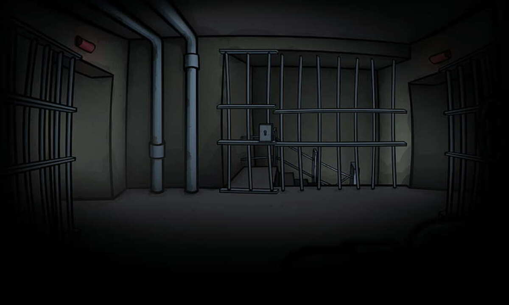

Inventory
abcdefghijklmnopqrstuvwxyz
Vous avez trouvé un escalier qui mène vers le souterrain.
Cet escalier est inaccessible et il semble très sombre, vous ne pouvez pas voir le fond.
Vous ne pouvez pas descendre sans pince pour débloquer la porte.